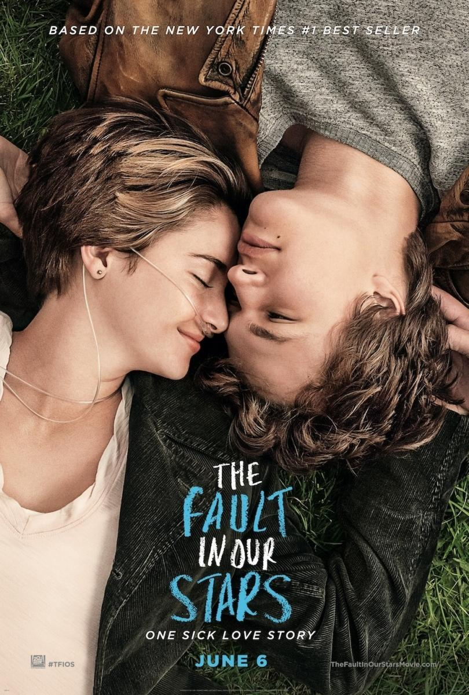

Bajo La Misma Estrella
Reseña
Es una novela de literatura juvenil y también está considerada un libro de autoayuda. A través de la vida de una adolescente que enfrenta una enfermedad terminal como el cáncer,
el libro enseña que la vida no es fácil pero siempre merece la pena vivir.
La protagonista de la novela se llama Hazel Grace Lancaster quién no sospecha que, a pesar de tener consciencia de que morirá en cualquier minuto, aún le queda por vivir uno de
los episodios más apasionantes de su vida: el encuentro del amor verdadero cuando conoce a Augustus Waters.
| Informacion | |
| Autor | John Green |
| Año de publicacion | 2012 |
| Clasificacion | Literatura juvenil |
| Cantidad de páginas | 302 |
| Adaptacion a pelicula | Si |